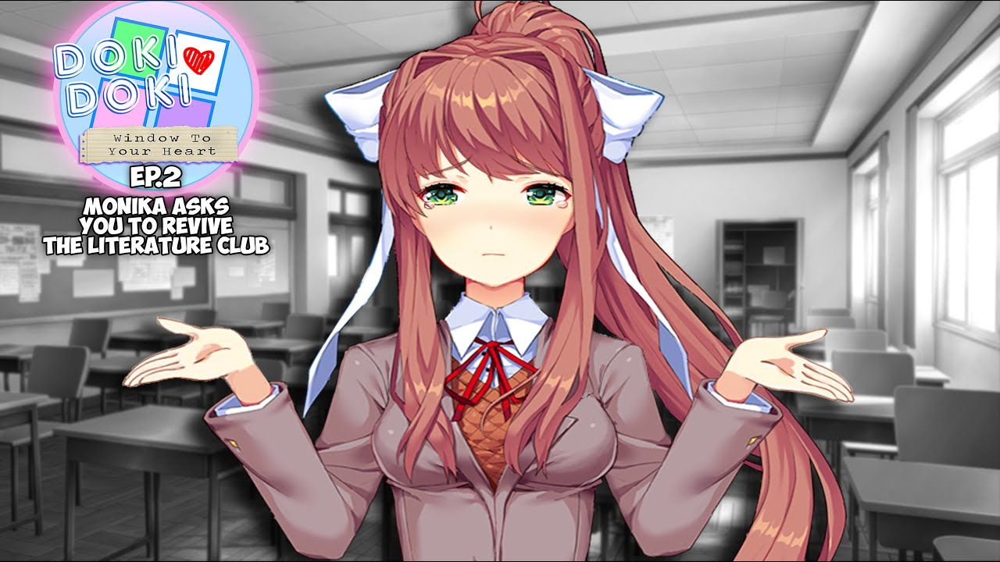

Window to Your Heart
Em Window to Your Heart, você interpreta um novo MC: um estudante transferido amaldiçoado com um presente especial. Este mod ocorre após uma versão alternativa do Ato 1 do DDLC, levando à dissolução do clube de literatura. A pedido de Monika, seu trabalho é reformar o clube, bem como a amizade das meninas antes da formatura.
⬇ Download